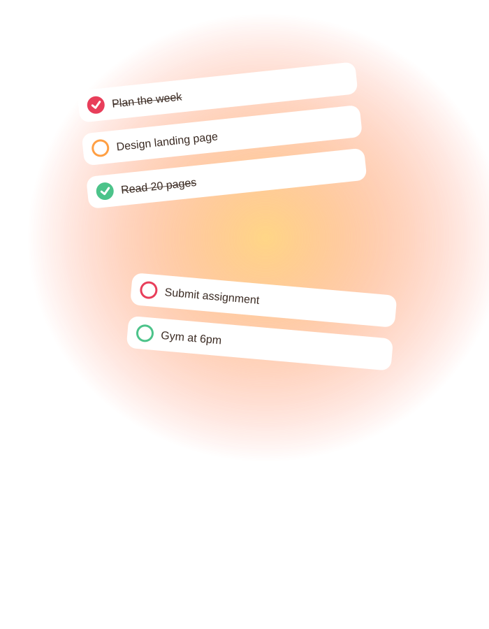
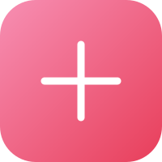
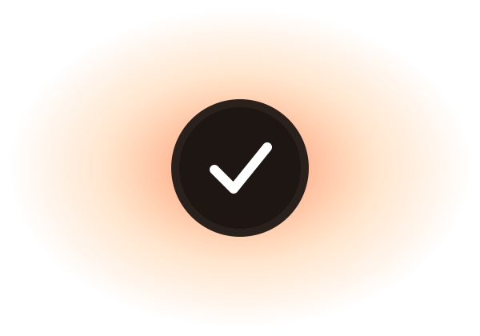
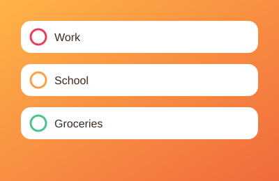
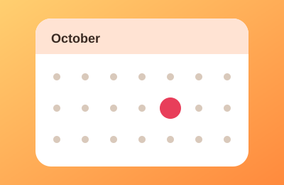
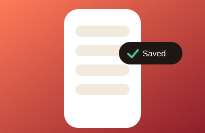

Make a project for anything: work, school, groceries.
Create
By Friday, your to-do list will not be a source of stress, forgotten deadlines or a dozen sticky notes. It will be a plan.
Make a project for anything: work, school, groceries.
Create
Add todos with a title, notes, due date and priority.
AddTick it off and feel the little win. Your data stays saved.
Finish

A default myTasks project is ready on day one. Add more and switch between them in a tap.
Low, medium or high. Each todo gets a color so the urgent stuff stands out at a glance.

Pick a date and see what is coming up. No more "wait, that was today?"

Refresh, close the tab, come back tomorrow. Your todos are still there.
No. Doable runs in your browser and saves to local storage.
No. Everything is saved on your device and loads again when you return.
Yes. It is built for small screens first.